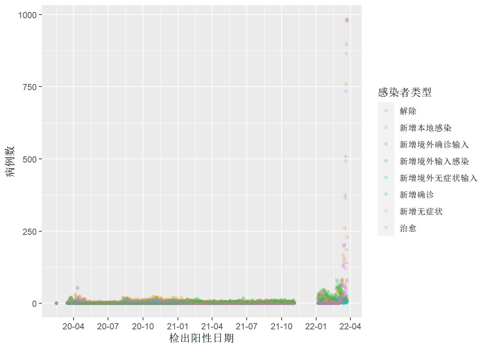
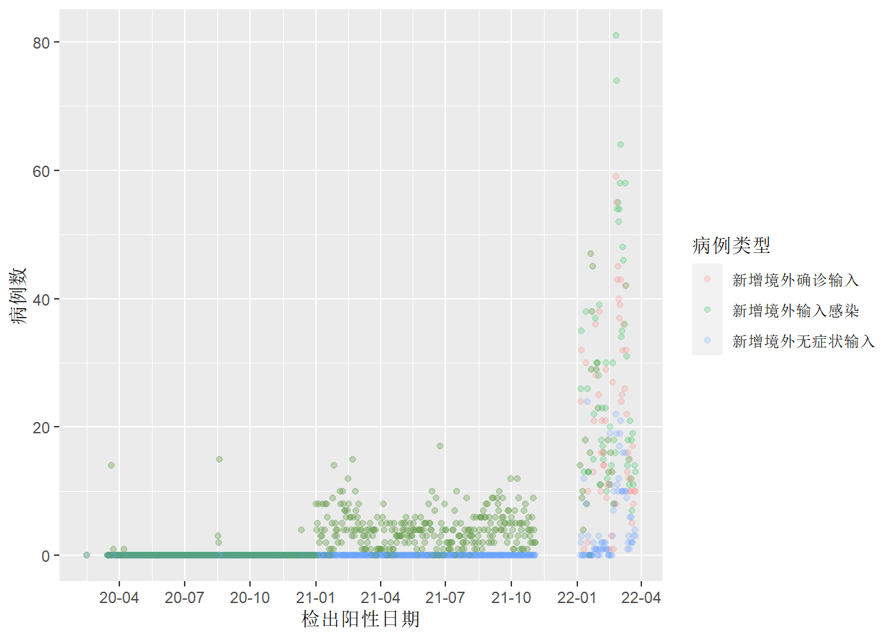
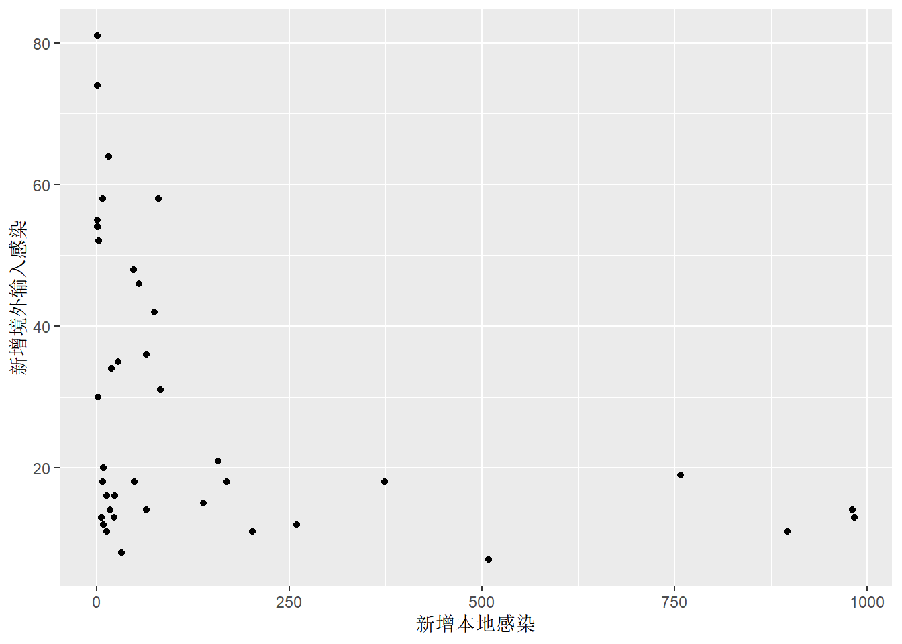
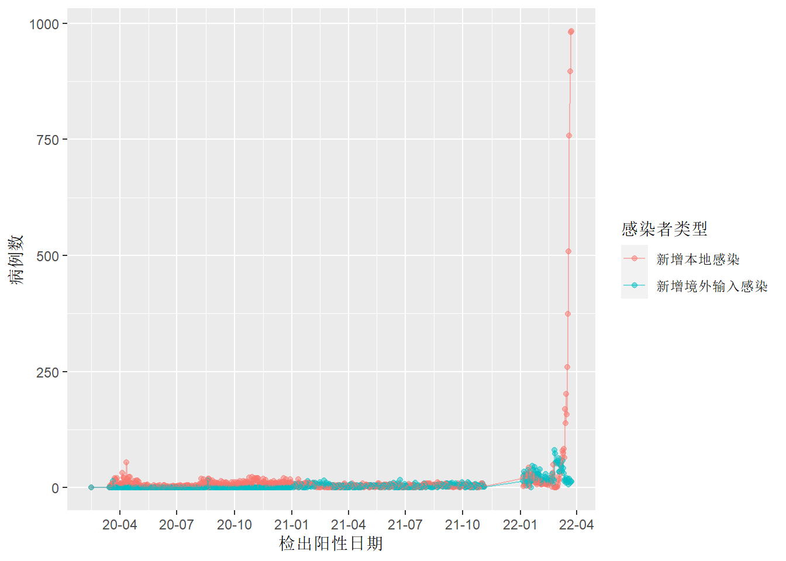
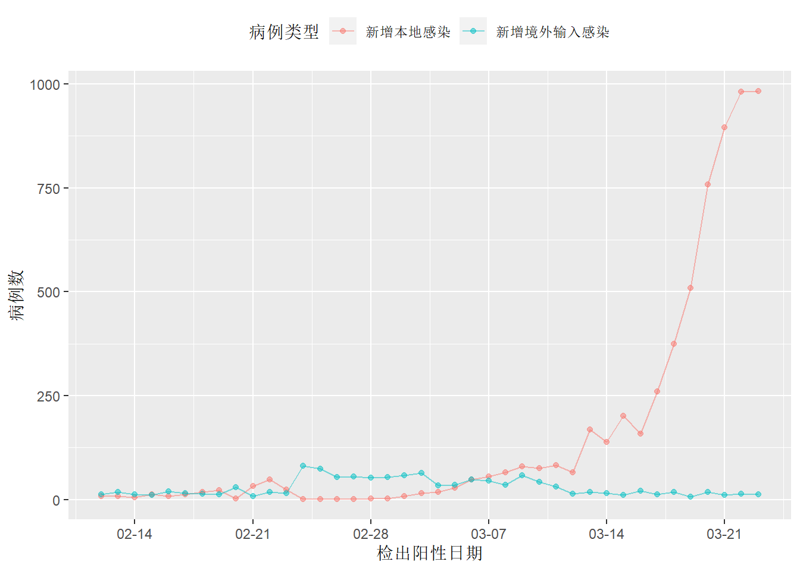
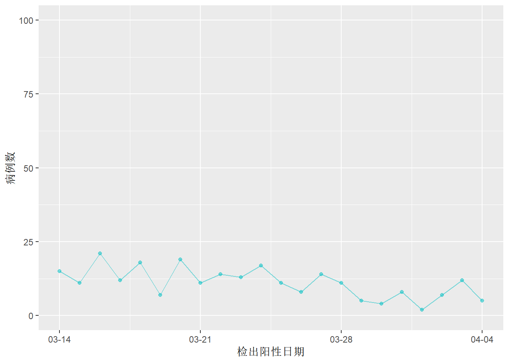
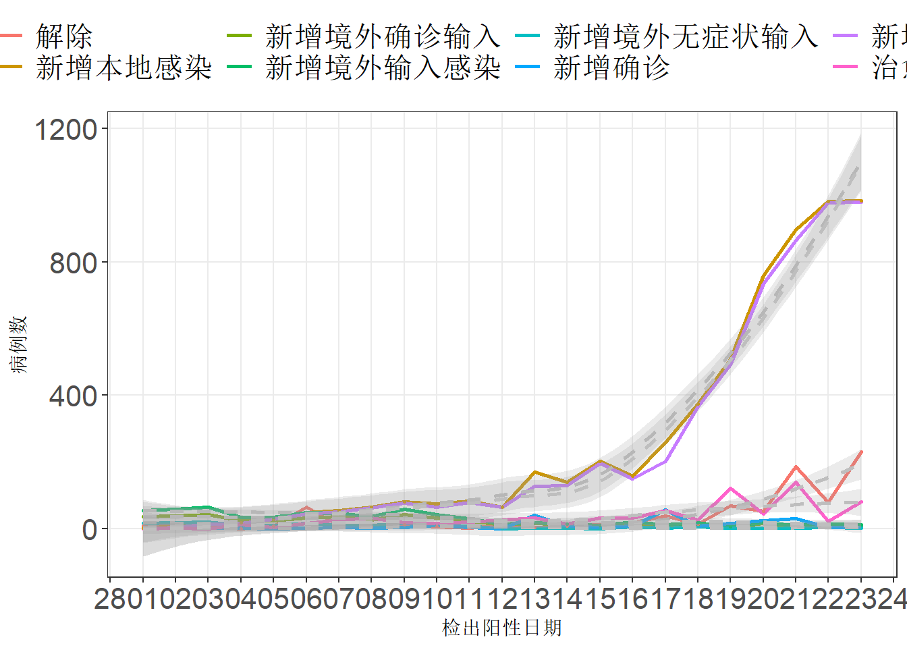

今天本地的疫情终于没有增加，抽了点时间关注其他地区的疫情形势。看官方通报的数据，对曾经的模范城市的疫情有兴趣，决定来简单看看。
数据获取
数据来源
要获取准确的数据，当然是上官方网站。打开上海市卫健委的官网(https://markdown.com.cn/basic-syntax/)，疫情数据公告都在“新闻发布”栏目中，再仔细一看，疫情信息的标题中就包含了所有新增、确诊数据。真是太方便了。新闻页面也是连续的以_[num]为页码的编号，这种页面爬起来不要太省事。
R包
首先加载需要用到的包，主要使用rvest包获取静态网页信息，谷歌浏览器selectorgadget插件获取需要信息的节点，tidyverse整理数据，绘图，lubridate包处理日期变量。
library(rvest)
library(tidyverse)
library(lubridate)主页信息获取
使用selectorgadget在网页上找到需要的变量“时间”和“标题”，对应的node分别是.time和.list-data a，使用rvest抓取后，转为文本存储在列表中。
## 设置url
url <- "https://wsjkw.sh.gov.cn/xwfb/index.html"
## 获取首页信息
content <- read_html(url)
reportdate <- content %>%
html_nodes(".time") %>%
html_text() %>%
as.Date.character()
title <- content %>%
html_nodes(".list-date a") %>%
html_text()
basedata <- tibble(reportdate = reportdate, title = title)爬取所有数据
上海的疫情变化主要从3月开始，但为了查看之前的变化，是否输入病例压力增大导致本次疫情，因此爬取了2到200页到的数据。使用for循环，rbind组合成基础数据。
## 使用循环爬取2到200也网页信息
for (i in 2:200) {
url = paste0("https://wsjkw.sh.gov.cn/xwfb/index_", i, ".html")
content <- read_html(url)
reportdate <- content %>%
html_nodes(".time") %>%
html_text() %>%
as.Date.character()
title <- content %>%
html_nodes(".list-date a") %>%
html_text()
basedata <- basedata %>%
rbind(tibble(reportdate = reportdate, title = title))
}
## 写出数据
write.csv(basedata, "data/basedata.csv")数据清洗
这一步比较麻烦的是对标题中日期字符的整理。使用str_extract_all命令后提取的日期，变成了列表。再合并为向量形势的日期格式数据时出了点麻烦。最后使用了笨办法for循环unlist后再paste0合并。其实直接用标题前的日期-1没什么大的误差，主要是在跟自己较劲搞得这么麻烦。
好了，开始分析吧
先画个简单的图看看大趋势
以报告感染者类型为颜色看，从20年1月到21年12月期间，上海的感染人数几乎在处于一个长期稳定的状态，从2022年3月开始呈直升飞机式的增长。奇怪的是中间咋有个空白区，没有数据。查看原始网页，发现网站从2021年11月6日-2022年1月1日没有更新数据。这是一个奇怪的现象。不过没关系，这不影响我们后面的分析，这对原因分析有很大关系。

输入感染者的趋势
对上海这波疫情有个合理的猜测是，1月初上海接纳大量某地的航班的，导致上海市输入疫情压力陡增，再加上Omicron变异株超强传播能力，双重压力下导致这个模范城市失守。好吧，我们来看看是否能验证输入压力陡增这个猜测。从图上看好像跟上图颇像，鉴于确诊和无症状都属与感染这，下一步我们把本地和输入的感染者的合计数的变化可视化看看。

感染者总数
先用二者做个散点图看看,如图，完全看不出啥关系啊。。。。输入感染者较多的时候，反而本地感染处于低水平。这个图像，线性回归暂时也不考虑。我们还是从感染者数量和时间的关系看看。

画出来如下，大致能看从1月到3月二者都在上升，但到了3月后，二者分道扬镳了。 
2022年1到三月
我们把时间尺度拉大到2月中旬到3月看看。放大后（下图1）可以看到从2月10日起到2月21日之间，二者几乎是呈线性相关，到2月22日，输入感染人数开始上升，此时上海本地感染数量仍然无幅度的改变，处于平稳状态，此时输入感染者数量是大于本地感染。
为了更仔细看清楚变化情况，我们将y轴的数量调整至0-100例（下图2），这时候能清楚看到每天的变化。3月6日左右，二者数量出现了反转，本地感染者数量快速上升，并大幅度超过输入感染者。

简单总结
从上面的简单分析可得知，上海市境外输入感染者数量，从去年2月20日左右开始上升，增加的幅度从平均12例左右，到2月24左右达到85例左右。确实存在一个数量快速增加的阶段，之后过了大概一周的时间上海本地感染者开始快速上升，我们不得不猜测这二者之间可能存在某种联系。最后一张图添加了平滑曲线，做一个大致的预测。从图可见上海这一次疫情新增病人数量仍未到达所谓的“拐点”没爬错数据。随着检测人数的增加，防控措施的进一步加码和落实，相信这一波疫情会逐渐得到控制。
